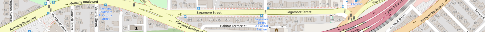

sfgazetteer.com

How to Identify a Street in San Francisco
By Dave Schweisguth (email: dave at schweisguth dot org). Last updated Dec. 25, 2025.
When out walking, one sometimes finds that one doesn't know what street one is on. The street might not be signed, or one might be on a long block far from the nearest street sign. But there are surprisingly many ways to find out a street's name, especially in San Francisco. I've made use of almost all of these at one time or another.
Many different places on a street can give its name, or a property's address:
- A street's name is often stamped in the sidewalk at intersections. (It is sometimes said that this practice was instituted after the 1906 earthquake and fire, when there was nothing left standing in the devastated parts of the city to identify the streets, but sidewalk stamping began shortly before the disaster.)
- Some large buildings downtown name the street or streets they're on in their carved or cast ornamentation.
- Some buildings and mailboxes display not just the building's street number, but the name of its street as well. All of the residential parking lots in the Parkmerced neighborhood display their addresses.
- Building directories, whether printed or electronic, sometimes display the building's address.
- Mail and packages left in an entryway can reveal its address.
- Refuse bins are sometimes marked with the customer's address, such as in areas where gremlins move them around.
- Businesses, such as corner stores, and apartment buildings are sometimes named for the street they're on.
- Communications equipment boxes are sometimes addressed. Utility poles sometimes indicate street numbers, but I haven't seen a street name on a utility pole.
- Water infrastructure like standpipes and backflow preventers is sometimes signed with its address or the addresses of the buildings it serves.
- Separately administered areas like large parks, the campuses of schools and hospitals and the like, and multi-building residential complexes often post maps which include street names.
- Temporary signage for detours, construction, etc. often names the street it's on and adjacent streets.
A street's name can be inferred in many ways:
- An unsigned block adjacent to a signed block with consecutive street numbers must be part of the same street.
- In neighborhoods with numbered or alphabetized streets, one may be able to work out a street's name from an adjacent street's name. If one knows an area well, an intersecting street (and perhaps the street numbers on the blocks at the intersection) can also give away a location.
- A street number above 5000 can only be on one or one of a few streets: Oceanview Terrace, in the southwest part of the city behind H Mart, is unusually numbered from 8000 to the 8400s. Geary Boulevard's last block is its 8300 block, Fulton Street's is its 7300 block, California Street's is its 7000 block, and Third Street's is its 6600 block. Mission and Anza Streets reach the 5000s, and Diamond Heights Boulevard is unusually numbered from 5000 to the 5800s. Street numbers below 5000 are too common to be informative without additional information.
- Residential parking permit signage indicates the permit area, and sometimes two adjacent permit areas.
- Muni vehicles and stops display route numbers, which can narrow down their locations to an observer familiar with the route.
- Muni stops also have IDs, which may be looked up on line.
- A street may be named for a hill or other geographical feature it's on or near.
- Prominent buildings or distinctive features of the street itself, such as decorative pavement or lighting, can also provide a clue.
And one can always give up and ask a passerby or look at a map. If a street is unmarked and commonly used maps don't show its name, Department of Public Works key maps are the last resort. Those maps also link to scans of paper maps of various kinds, which can provide interesting detail and background but may not be up to date.
 The
contents of this web site are licensed under a Creative Commons
Attribution-ShareAlike 3.0 Unported License.
The
contents of this web site are licensed under a Creative Commons
Attribution-ShareAlike 3.0 Unported License.